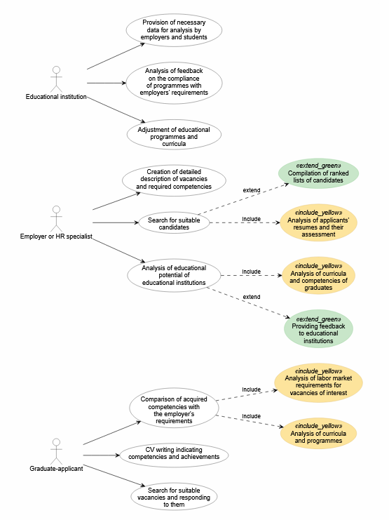

Faculty: Computer Technologies and Applied Mathematics
Department: Information Technologies
Speciality: 01.04.02 Applied Mathematics and Informatics
Theme of master's dissertation: Intelligent technologies for targeted personnel selection in the IT industry
Scientific adviser: PhD in Engineering, Assoc. Prof. Poletaikin Aleksei Nikolaevich
Materials on the theme: Resume | Library | Links | Search report | Individual section
One of the most acute problems of the modern national economy is the problem of employment and professional development of students and graduates of higher education institutions. The situation is caused by the mismatch between the skills and knowledge acquired by students in educational programmes and the requirements of the labour market put forward by employers. This is especially acute in the field of information technology, where the industry develops and implements new tools and programming languages much faster than universities update the relevant standards and curricula.
Another problem is the difficulty in ensuring effective recruitment of qualified personnel by companies. Traditional approaches to recruitment focus on analysing CVs and conducting interviews, which does not provide a sufficiently complete and objective assessment of a candidate, especially a graduate without extensive experience. That is why a targeted approach becomes expedient, taking into account data on the educational environment in which the competencies of the future specialist were formed. Existing methods of assessing universities are not adapted to solving HR tasks and do not take into account the complex structure of educational potential.
The relevance of the topic is due to the need to ensure interaction between employers and universities in order to bring graduates' competencies in line with labour market requirements, as well as to simplify and automate the work of recruitment specialists. The work is devoted to the creation of an intelligent assistant that implements search, analytical and management functions for assessing educational potential and supporting decision-making in the recruitment of young specialists.
The goal of the research is to develop models and methods for assessing the educational potential of universities and semantic matching of graduates' competencies with employers' requirements for targeted recruitment in the IT industry, as well as to create modules of a digital service on their basis.
Main objectives of the research:
Object of research: the process of interaction between higher education institutions and the labour market in the context of training and employment of IT graduates.
Subject of research: models and methods for analysing the educational potential of educational institutions and semantic matching of graduates' competencies with employers' requirements.
Within the framework of the master's work, it is planned to obtain relevant scientific results in the following areas:
As practical results, it is planned to develop modules of a digital service in Python using the pandas, numpy, scipy, sklearn and pulp libraries, the SQLite DBMS and SQLAlchemy ORM.
The professional and educational space of the individual in the context of the IT industry is a socio-cultural concept that unites the education system and the IT labour market. It has a significant impact on a person's attitude to their professional future and on the formation of the trajectory of their professional development. Professional development covers the period from the emergence of professional interests and preferences to the termination of professional activity. The main feature of the IT industry is its dynamism: technologies, frameworks and methodologies are updated much faster than in most other fields, so continuous education is not only a prerequisite for success but also a mandatory condition for maintaining competitiveness.
A feature of the professional and educational space is its openness, non-linearity and non-equilibrium, which determine the potential for self-organization and self-development both for the individual and for the institutions that form it — universities and employers. On the other hand, these properties also cause significant problems: graduates face difficulties associated with a lack of clarity in conditions of excessive information about labour market requirements and educational opportunities, as well as with the gap between technologies and skills that are actually relevant for employers and existing educational programmes. Universities are forced to promptly adapt curricula, and employers — to objectively assess the educational potential of universities and look for candidates who really possess the necessary competencies.
The participants of the professional and educational space are the student of an IT programme at a university, the graduate-applicant, the employer (HR specialist of an IT company) and the educational institution itself. The student is a person at the early stages of professional development; their goal is to navigate the educational space to form their own development trajectory, taking into account labour market requirements and comparing them with existing curricula, courses and disciplines. The graduate-applicant is a person at the stage of entering the professional environment; their key problem is job search using vacancy aggregators based on comparing and assessing the acquired competencies and labour market requirements. The employer and HR specialist solve the tasks of assessing the educational potential of educational institutions and finding suitable candidates. The educational institution is the institution that forms this space; its task is to ensure the competitiveness of graduates by drawing up and timely adjusting curricula and programmes.
The general structure of the considered educational space for the IT industry is shown in Figure 1 as a use case diagram. It reflects the goals and interactions of all four participants: analysis of labour market requirements, CV writing, job search and response (graduate-applicant); creation of vacancy descriptions, candidate search, analysis of the educational potential of universities and feedback (employer/HR); provision of data, analysis of feedback and adjustment of educational programmes (educational institution).

Figure 1 – Use case diagram demonstrating the structure of the educational space
Existing vacancy aggregators automatically collect information about open offers, but they work with purely formal, often outdated features — job titles and keywords that do not reflect the semantic correspondence between the content of the educational programme and the essence of professional activity. Curricula and annotations are limited, not always relevant and difficult to collect into a single picture. That is why intelligent technologies for targeted recruitment based on natural language processing and machine learning are of particular relevance for the IT industry. They allow structuring and analysing the open professional and educational space, converting its qualitative characteristics into quantitative metrics, which facilitates decision-making for all participants in this space.
The educational potential of a university is considered as an integral characteristic calculated on the basis of twenty indicators k1, ..., k20, grouped into six indices: staff potential (I1), research potential (I2), material and technical base (I3), educational and methodological potential (I4), financial potential (I5) and social infrastructure (I6). Each index aggregates a group of primary indicators reflecting the corresponding aspect of the university's activity.
Since the initial indicators have different units of measurement, min-max normalization is performed for each of them, bringing the values to a single interval [0, 1]:
knorm = (kfact − kmin) / (kmax − kmin),
where kfact is the initial real value of the indicator, kmin and kmax are the minimum and maximum values of the indicator in the considered sample of universities. Normalized indicators are aggregated into group indices Ii (i = 1, ..., 6).
Educational potential is calculated as a weighted sum of group indices:
Op = Σi=16 αi · Ii, Σi=16 αi = 1,
where αi are weight coefficients reflecting the importance of each group of indicators; the resulting potential value lies in the interval [0, 1].
Determining the weights αi and βji is the main difficulty of the linear model, so they are selected using the analytic hierarchy process (AHP) by T. Saaty. The procedure includes:
For each j-th position, a vector of expert weights βj = (βj1, ..., βj6) is set, and the final assessment of how suitable the university is for recruiting personnel for this position is calculated by the formula:
Rj = Σi=16 βji · Ii, Σi=16 βji = 1,
where Ii is the calculated normalized group index of the i-th component of educational potential, βji is the weight of the i-th group for the j-th position. Five position profiles are considered: researcher, design engineer, sales manager, financial analyst, IT developer. For the researcher, the maximum weight is given to the research index (0.40), for the design engineer — to the material and technical base (0.35), for the sales manager — to social infrastructure (0.50).
University clustering is performed using the K-Means algorithm on standardized group indices with the choice of the optimal number of clusters by the elbow method (in our case, three clusters: research-oriented, technically equipped and balanced). Random Forest is used to predict graduate success; the target variable is formed as a linear combination of the university's educational potential, the graduate's GPA, the presence of publications and internships with the addition of random error:
Y = c1·Op + c2·GPA + c3·Pub + c4·Intern + ε,
where c1–c4 are coefficients, Pub is the presence of publications, Intern is the presence of an internship, ε is random error. The optimization problem of allocating the employer's resources is solved by integer linear programming methods (PuLP library) with constraints on the budget and the number of vacancies allocated for targeted recruitment.
The final ranking of universities is formed as a combination of the results of the linear additive model and the ML block. Spearman's rank correlation coefficient is used to compare the two rankings:
ρ = 1 − (6 · Σdi2) / (n · (n2 − 1)),
where di is the difference in ranks of the i-th university in the two rankings, n is the total number of universities. As a result, the coefficient averaged 0.6–0.8. The greatest agreement was recorded for the design engineer position (correlation over 0.85), the least — for the sales manager (about 0.4). This confirms that the linear model and the ML approach complement each other: the former is transparent and applicable without historical data, the latter more accurately captures non-linear dependencies.
The linear additive model with weights selected by the analytic hierarchy process has the advantages of transparency, simplicity of interpretation and is applicable in the absence of historical data on graduate success. It is well suited for preliminary ranking of universities. Machine learning methods automatically reveal complex non-linear relationships, provide a more accurate prediction of success and open up opportunities for optimization models of resource allocation, but require historical data and are more complex in interpretation.
At the time of writing this abstract, the master's work is not yet completed. The full text of the work and materials on the topic can be obtained from the author or the scientific adviser after the defence.